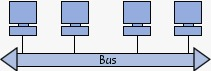

historia y evolucion de las redes informaticas
01 Marzo 2024 Maykel Caballero Alguna vez te has planteado convertirte en especialista en redes de telecomunicaciones? ¿Sabes cuál es la historia y evolución de las redes informáticas? En este artículo vamos a intentar dar respuesta a todas estas preguntas.
Y es que, si quieres un curso de redes informáticas y de telecomunicaciones que menos que conocer su historia y evolución. Además, gracias a esto verás su importancia en la actualidad e intuirás sus perspectivas de crecimiento en el futuro.
Se puede decir que las redes informáticas tal y como las conocemos hoy en día empezaron con el desarrollo de ARPANET a finales de la década de los 60’s. Algo con lo que ya se había teorizado desde muchos años antes, pero que culminó en 1969 con la primera transferencia de datos entre dos ordenadores situados a más de 600km de distancia.
Antes de ese momento, existían redes de proveedores de ordenadores diseñadas principalmente para conectar terminales o estaciones de trabajo remotas a un ordenador central.
La conmutación por paquetes funcionaba en ráfagas, en lugar de la conmutación más tradicional, que lo hacía a través de mensajes o circuitos.
Para poder llevar el concepto de ARPANET a la práctica, Leonard Kleinrock fue el responsable de investigar y desarrollar la técnica de conmutación de paquetes. Gracias a su desarrollo se podían compartir de manera eficiente los recursos de comunicación entre usuarios situados en distintas ubicaciones

Una historia que comienza a mediados del siglo XX y no para de aportar nuevas mejoras e implementaciones hasta la actualidad. ¿Qué nos depara el futuro? Pues suponemos que muchos años más de evolución para hacer que la transferencia de datos a través de las redes informáticas sea todavía más rápida y eficiente.
El futuro de las redes informáticas
El futuro de las redes informáticas pasa por la innovación y la mejora de los sistemas y redes de telecomunicaciones. Un futuro que, además necesita profesionales especializados como tú.
Un campo en constante evolución y en constante transformación que te va a dar la oportunidad de crecer a nivel personal y profesional.